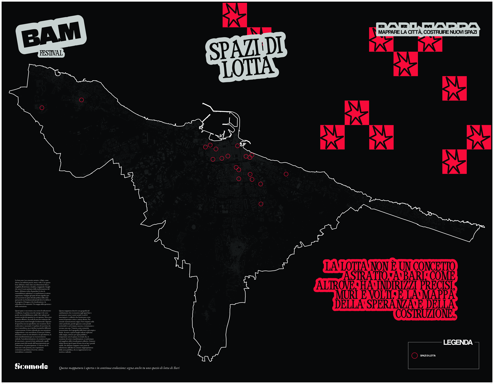
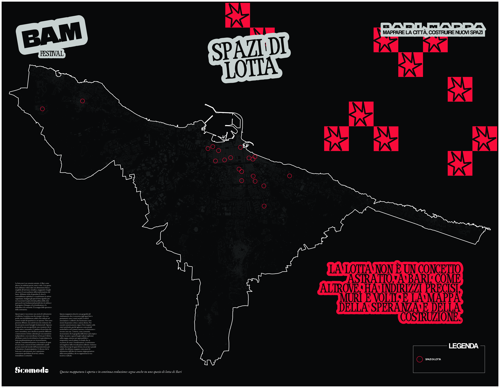
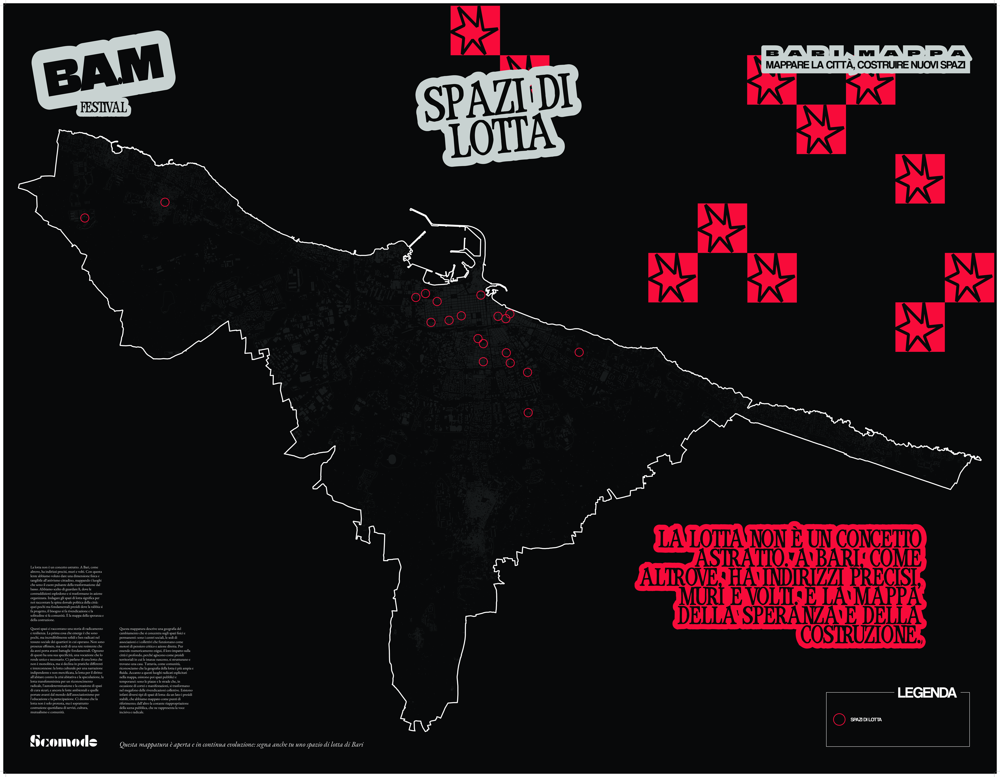

I have developed a digital toolkit for urban research and analysis in my hometown, Bari. The project is part of a collaborative article examining aggregation spaces and urban dynamics, this project contains two sophisticated web-based visualization tools designed to transform survey data and geographic information into publication-ready outputs. The tools were developed for Scomodo , a cultural association focused on independent journalism and social analysis.
The project addresses a critical need in urban research: the ability to visualize and communicate complex data about community spaces, amenities, and resident perspectives in an accessible yet rigorous manner. By combining interactive data visualization with cartographic mapping, the toolkit enables researchers, journalists, and community organizers to explore patterns in urban life, identify spatial relationships, and produce high-quality visual materials for both digital and print publications.
The project consists of two tools: an interactive survey visualization dashboard that transforms some of this questionnaire responses into dynamic charts and graphs, and a cartographic mapping tool that creates publication-ready SVG maps displaying various urban features and amenities.
The maps generated using the tool were were featured at a festival organized by the association in October 2025 (see pictures below).
Both tools were built with a focus on accessibility, usability, and professional-grade output quality, ensuring that the resulting visualizations could serve both analytical and communicative purposes in the context of urban research and journalism.
A live version of both project is aviable at this page.

Live preview functionality is central to the user experience of both tools. In the survey dashboard, every change to chart type, color scheme, or data selection instantly updates the visualization, allowing users to explore different representations interactively. This feedback loop supports an exploratory approach to data analysis, where users can quickly test different hypotheses and visual approaches without committing to any single representation options.
The cartographic tool implements a synchronized dual-view system: a live map preview for interaction and data verification, paired with an export preview that shows exactly how the final SVG will appear. This eliminates surprises during the export process and allows users to make adjustments with full knowledge of how they will affect the final output. The SVG files produced by the interface later went through some improvements of the designers at Scomodo, you can see the final results in the gallery.
Responsive design considerations ensure that both tools function effectively across different screen sizes, though the focus remains on desktop use where the complexity of the controls and the need for precision make mouse-and-keyboard interaction optimal. The layout adapts gracefully to different viewport sizes, maintaining usability even on smaller laptop screens while taking full advantage of larger displays when available.
One of the primary challenges was achieving publication-quality SVG exports that could be used directly in professional design workflows. Initial export implementations produced SVG files that did not represent the correct output. Sometimes text would reflow unpredictably, fonts would substitute incorrectly, and complex chart elements would become uneditable. The solution required embedding fonts directly in the SVG files using base64-encoded data URLs and implementing path generation that maintains editability while ensuring visual fidelity.
The cartographic tool faced the technical challenge of working with map tiles across CORS restrictions. Modern browsers prevent loading tiles from many mapping services when running locally or from different domains, which would break the export functionality. The solution implemented a proxy mechanism combined with tile caching strategies that respect both security constraints and the need to generate high-quality map exports. This required careful handling of asynchronous operations to ensure all tiles loaded before export generation began.
Label collision detection and resolution required developing custom algorithms since standard mapping libraries don't provide adequate solutions for publication-quality label placement. The system needed to balance multiple factors: maintaining geographic accuracy, ensuring readability, and creating visually pleasing layouts. The implemented solution uses a combination of quadtree spatial indexing for efficient collision detection and iterative adjustment algorithms that nudge labels to optimal positions while respecting proximity to their associated markers.